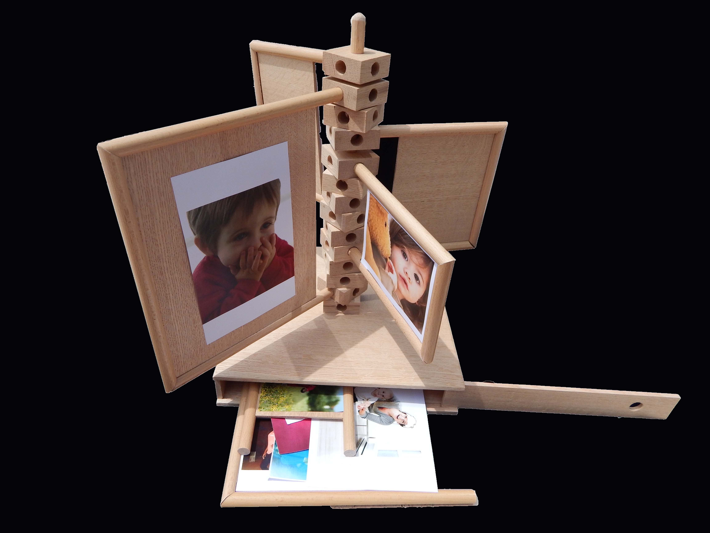

Arlene Hayes
Welcome to my virtual portfolio

I hail from the lovely Grenada, an island in the Lesser Antilles of the Caribbean, where I attended school up to tertiary level at the local community college. I now attend the Illinois Institute of Technology in Chicago, Illinois after having gained two years of work experience at a design and construction firm back home in Grenada. I am currently pursuing a professional Bachelor's degree in Architecture. By way of hobbies, I enjoy dance and the performing arts on a whole. I am a member of Conception Dance Theatre Grenada, a modern-, ballet- and Caribbean folk-oriented dance company. As a steadily maturing student of Architecture and dance, I would love to find a way to integrate the two and hence, I find myself greatly interested in the idea of Theatre Design. My long term goal is to develop myself as a designer and eventually become a project manager versatile in both design/construction and stage art. Short term, I am interested in internship positions with architecture firms in and around Chicago to develop my skills and work ethic. I am also seeking opportunities to study abroad where I can experience new cultures and come away with a greater appreciation of world architecture and art practices.
The first half of the spring semester of year one was dedicated to the creation of an object from found (recycled) items combined with urban red oak. I obtained an old wooden baby-gate from a nearby thrift store and was inspired to create from its parts something that would be of use to a growing child after the gate was no longer needed. Almost everyone has baby pictures. Parents love to record the growing experiences of their children. So I decided to make something that would function as a creative, kid-friendly way to display these pictures. I used the dowels from the gate to form picture frames with sheets of oak as backing. I wanted the photo arrangements to be as fluid as possible so I drew from the idea of children's building blocks to create a vertical support stack into which frames of different sizes could be arranged and rearranged to the child's fancy. The base of the photo display unit allows for storage of unused frames, offering even more flexibility of design.
